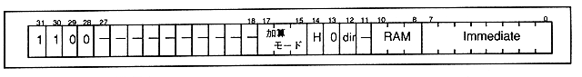
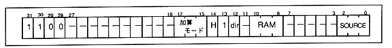

The DMA instruction executes data transfer between the external and DSP internal RAM via the external bus. There are two methods: directly setting the number of transfer words using Imm data, and setting the number of transfer words in the RAM by specifying the internal data RAM number. Figure 4.8 shows the former format and Figure 4.9 shows the latter format. The instruction details are shown from the next page.
Figure 4.8 DMA instruction format 1

Figure 4.9 DMA instruction format 2
